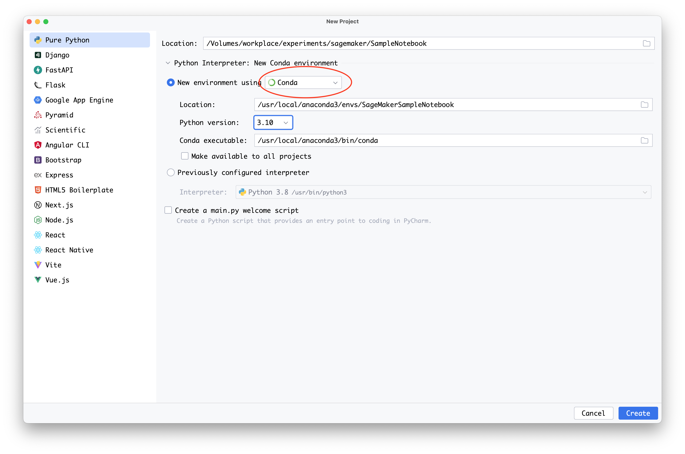

Run your local code as a SageMaker training job
You can run your local machine learning (ML) Python code as a large single-node Amazon SageMaker training job or as multiple parallel jobs. You can do this by annotating your code with an @remote decorator, as shown in the following code example. Distributed training (across multiple instances) are not supported with remote functions.
@remote(**settings) def divide(x, y): return x / y
The SageMaker Python SDK will automatically translate your existing workspace environment and any associated data processing code and datasets into a SageMaker training job that runs on the SageMaker training platform. You can also activate a persistent cache feature, which will further reduce job start latency by caching previously downloaded dependency packages. This reduction in job latency is greater than the reduction in latency from using SageMaker managed warm pools alone. For more information, see Using persistent cache.
Note
Distributed training jobs are not supported by remote functions.
The following sections show how to annotate your local ML code with an @remote decorator and tailor your experience for your use case. This includes customizing your environment and integrating with SageMaker Experiments.
Topics
Set up your environment
Choose one of the following three options to set up your environment.
You can annotate and run your local ML code from SageMaker Studio by creating a SageMaker Notebook and attaching any image available on SageMaker Studio image. The following instructions help you create a SageMaker Notebook, install the SageMaker Python SDK, and annotate your code with the decorator.
-
Create a SageMaker Notebook and attach an image in SageMaker Studio as follows:
-
Follow the instructions in Launch Amazon SageMaker Studio in the Amazon SageMaker Developer Guide.
-
Select Studio from the left navigation pane. This opens a new window.
-
In the Get Started dialog box, select a user profile from the down arrow. This opens a new window.
-
Select Open Studio.
-
Select Open Launcher from the main working area. This opens a new page.
-
Select Create notebook from the main working area.
-
Select Base Python 3.0 from the down arrow next to Image in the Change environment dialog box.
The @remote decorator automatically detects the image attached to the SageMaker Studio notebook and uses it to run the SageMaker training job. If
image_uriis specified either as an argument in the decorator or in the configuration file, then the value specified inimage_uriwill be used instead of the detected image.For more information about how to create a notebook in SageMaker Studio, see the Create a Notebook from the File Menu section in Create or Open an Amazon SageMaker Studio Notebook.
For a list of available images, see Supported Docker images.
-
-
Install the SageMaker Python SDK.
To annotate your code with the @remote function inside a SageMaker Studio Notebook, you must have the SageMaker Python SDK installed. Install the SageMaker Python SDK, as shown in the following code example.
!pip install sagemaker -
Use @remote decorator to run functions in a SageMaker training job.
To run your local ML code, first create a dependencies file to instruct SageMaker where to locate your local code. To do so, follow these steps:
-
From the SageMaker Studio Launcher main working area, in Utilities and files, choose Text file. This opens a new tab with a text file called
untitled.txt.For more information about the SageMaker Studio user interface (UI), see Amazon SageMaker Studio UI Overview.
-
Rename
untitled.txttorequirements.txt. -
Add all the dependencies required for the code along with the SageMaker library to
requirements.txt.A minimal code example for
requirements.txtfor the exampledividefunction is provided in the following section, as follows.sagemaker -
Run your code with the remote decorator by passing the dependencies file, as follows.
from sagemaker.remote_function import remote @remote(instance_type="ml.m5.xlarge", dependencies='./requirements.txt') def divide(x, y): return x / y divide(2, 3.0)For additional code examples, see the sample notebook quick_start.ipynb
. If you’re already running a SageMaker Studio notebook, and you install the Python SDK as instructed in 2. Install the SageMaker Python SDK, you must restart your kernel. For more information, see Use the SageMaker Studio Notebook Toolbar in the Amazon SageMaker Developer Guide.
-
You can annotate your local ML code from a SageMaker notebook instance. The following instructions show how to create a notebook instance with a custom kernel, install the SageMaker Python SDK, and annotate your code with the decorator.
-
Create a notebook instance with a custom
condakernel.You can annotate your local ML code with an @remote decorator to use inside of a SageMaker training job. First you must create and customize a SageMaker notebook instance to use a kernel with Python version 3.7 or higher, up to 3.10.x. To do so, follow these steps:
-
Open the SageMaker console at https://console.aws.amazon.com/sagemaker/
. -
In the left navigation panel, choose Notebook to expand its options.
-
Choose Notebook Instances from the expanded options.
-
Choose the Create Notebook Instance button. This opens a new page.
-
For Notebook instance name, enter a name with a maximum of 63 characters and no spaces. Valid characters: A-Z, a-z, 0-9, and .:+=@ _%- (hyphen).
-
In the Notebook instance settings dialog box, expand the right arrow next to Additional Configuration.
-
Under Lifecycle configuration - optional, expand the down arrow and select Create a new lifecycle configuration. This opens a new dialog box.
-
Under Name, enter a name for your configuration setting.
-
In the Scripts dialog box, in the Start notebook tab, replace the existing contents of the text box with the following script.
#!/bin/bash set -e sudo -u ec2-user -i <<'EOF' unset SUDO_UID WORKING_DIR=/home/ec2-user/SageMaker/custom-miniconda/ source "$WORKING_DIR/miniconda/bin/activate" for env in $WORKING_DIR/miniconda/envs/*; do BASENAME=$(basename "$env") source activate "$BASENAME" python -m ipykernel install --user --name "$BASENAME" --display-name "Custom ($BASENAME)" done EOF echo "Restarting the Jupyter server.." # restart command is dependent on current running Amazon Linux and JupyterLab CURR_VERSION_AL=$(cat /etc/system-release) CURR_VERSION_JS=$(jupyter --version) if [[ $CURR_VERSION_JS == *$"jupyter_core : 4.9.1"* ]] && [[ $CURR_VERSION_AL == *$" release 2018"* ]]; then sudo initctl restart jupyter-server --no-wait else sudo systemctl --no-block restart jupyter-server.service fi -
In the Scripts dialog box, in the Create notebook tab, replace the existing contents of the text box with the following script.
#!/bin/bash set -e sudo -u ec2-user -i <<'EOF' unset SUDO_UID # Install a separate conda installation via Miniconda WORKING_DIR=/home/ec2-user/SageMaker/custom-miniconda mkdir -p "$WORKING_DIR" wget https://repo.anaconda.com/miniconda/Miniconda3-4.6.14-Linux-x86_64.sh -O "$WORKING_DIR/miniconda.sh" bash "$WORKING_DIR/miniconda.sh" -b -u -p "$WORKING_DIR/miniconda" rm -rf "$WORKING_DIR/miniconda.sh" # Create a custom conda environment source "$WORKING_DIR/miniconda/bin/activate" KERNEL_NAME="custom_python310" PYTHON="3.10" conda create --yes --name "$KERNEL_NAME" python="$PYTHON" pip conda activate "$KERNEL_NAME" pip install --quiet ipykernel # Customize these lines as necessary to install the required packages EOF -
Choose the Create configuration button on the bottom right of the window.
-
Choose the Create notebook instance button on the bottom right of the window.
-
Wait for the notebook instance Status to change from Pending to InService.
-
-
Create a Jupyter notebook in the notebook instance.
The following instructions show how to create a Jupyter notebook using Python 3.10 in your newly created SageMaker instance.
-
After the notebook instance Status from the previous step is InService, do the following:
-
Select Open Jupyter under Actions in the row containing your newly created notebook instance Name. This opens a new Jupyter server.
-
-
In the Jupyter server, select New from the top right menu.
-
From the down arrow, select conda_custom_python310. This creates a new Jupyter notebook that uses a Python 3.10 kernel. This new Jupyter notebook can now be used similarly to a local Jupyter notebook.
-
-
Install the SageMaker Python SDK.
After your virtual environment is running, install the SageMaker Python SDK by using the following code example.
!pip install sagemaker -
Use an @remote decorator to run functions in a SageMaker training job.
When you annotate your local ML code with an @remote decorator inside the SageMaker notebook, SageMaker training will automatically interpret the function of your code and run it as a SageMaker training job. Set up your notebook by doing the following:
-
Select the kernel name in the notebook menu from the SageMaker notebook instance that you created in step 1, Create a SageMaker Notebook instance with a custom kernel.
For more information, see Change an Image or a Kernel.
-
From the down arrow, choose the a custom
condakernel that uses a version of Python that is 3.7 or higher.As an example, selecting
conda_custom_python310chooses the kernel for Python 3.10. -
Choose Select.
-
Wait for the kernel’s status to show as idle, which indicates that the kernel has started.
-
In the Jupyter Server Home, select New from the top right menu.
-
Next to the down arrow, select Text file. This creates a new text file called
untitled.txt. -
Rename
untitled.txttorequirements.txtand add any dependencies required for the code along withsagemaker. -
Run your code with the remote decorator by passing the dependencies file as shown below.
from sagemaker.remote_function import remote @remote(instance_type="ml.m5.xlarge", dependencies='./requirements.txt') def divide(x, y): return x / y divide(2, 3.0)See the sample notebook quick_start.ipnyb
for additional code examples.
-
You can annotate your local ML code with an @remote decorator inside your preferred local IDE. The following steps show the necessary prerequisites, how to install the Python SDK, and how to annotate your code with the @remote decorator.
-
Install prerequisites by setting up the AWS Command Line Interface (AWS CLI) and creating a role, as follows:
-
Onboard to a SageMaker domain following the instructions in the AWS CLI Prerequisites section of Set Up Amazon SageMaker Prerequisites.
-
Create an IAM role following the Create execution role section of SageMaker Roles.
-
-
Create a virtual environment by using either PyCharm or
condaand using Python version 3.7 or higher, up to 3.10.x.-
Set up a virtual environment using PyCharm as follows:
-
Select File from the main menu.
-
Choose New Project.
-
Choose Conda from the down arrow under New environment using.
-
In the field for Python version use the down arrow to select a version of Python that is 3.7 or above. You can go up to 3.10.x from the list.

-
-
If you have Anaconda installed, you can set up a virtual environment using
conda, as follows:-
Open an Anaconda prompt terminal interface.
-
Create and activate a new
condaenvironment using a Python version of 3.7 or higher, up to 3.10x. The following code example shows how to create acondaenvironment using Python version 3.10.conda create -nsagemaker_jobs_quick_startpython=3.10 pip conda activatesagemaker_jobs_quick_start
-
-
-
Install the SageMaker Python SDK.
To package your code from your preferred IDE, you must have a virtual environment set up using Python 3.7 or higher, up to 3.10x. You also need a compatible container image. Install the SageMaker Python SDK using the following code example.
pip install sagemaker -
Wrap your code inside the @remote decorator. The SageMaker Python SDK will automatically interpret the function of your code and run it as a SageMaker training job. The following code examples show how to import the necessary libraries, set up a SageMaker session, and annotate a function with the @remote decorator.
You can run your code by either providing the dependencies needed directly, or by using dependencies from the active
condaenvironment.-
To provide the dependencies directly, do the following:
-
Create a
requirements.txtfile in the working directory that the code resides in. -
Add all of the dependencies required for the code along with the SageMaker library. The following section provides a minimal code example for
requirements.txtfor the exampledividefunction.sagemaker -
Run your code with the @remote decorator by passing the dependencies file. In the following code example, replace
The IAM role namewith an AWS Identity and Access Management (IAM) role ARN that you would like SageMaker to use to run your job.import boto3 import sagemaker from sagemaker.remote_function import remote sm_session = sagemaker.Session(boto_session=boto3.session.Session(region_name="us-west-2")) settings = dict( sagemaker_session=sm_session, role=<The IAM role name>, instance_type="ml.m5.xlarge", dependencies='./requirements.txt' ) @remote(**settings) def divide(x, y): return x / y if __name__ == "__main__": print(divide(2, 3.0))
-
-
To use dependencies from the active
condaenvironment, use the valueauto_capturefor thedependenciesparameter, as shown in the following.import boto3 import sagemaker from sagemaker.remote_function import remote sm_session = sagemaker.Session(boto_session=boto3.session.Session(region_name="us-west-2")) settings = dict( sagemaker_session=sm_session, role=<The IAM role name>, instance_type="ml.m5.xlarge", dependencies="auto_capture" ) @remote(**settings) def divide(x, y): return x / y if __name__ == "__main__": print(divide(2, 3.0))Note
You can also implement the previous code inside a Jupyter notebook. PyCharm Professional Edition supports Jupyter natively. For more guidance, see Jupyter notebook support
in PyCharm's documentation.
-